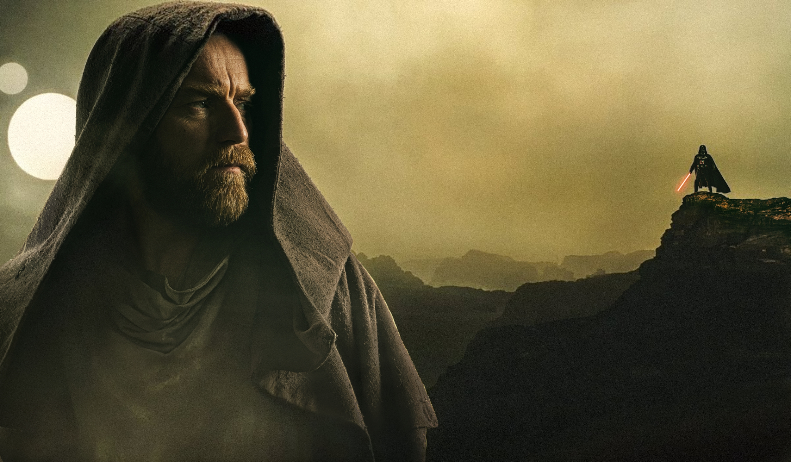
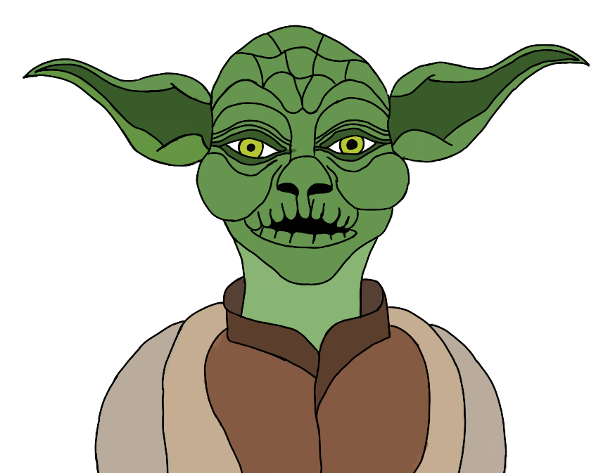

We use tracking beacons (cookies) to personalize your journey across the galaxy, to provide Holonet features and to analyze our hyperspace traffic. We also share your sector coordinates with our New Republic, merchant, and intelligence allies, who may combine it with other intel you’ve provided to them during past missions.